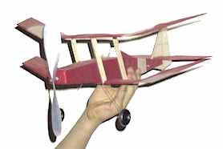

|
Alex Munro has sent in this picture of Dick Baxter's latest design, the XE-5. Seemingly a cross between the popular Akro and the WWI SE-5 fighter, it is a quick building, great flying biplane.
To see more of Alex's work, check out his site return to Copyright 1998, Thayer Syme |
 |